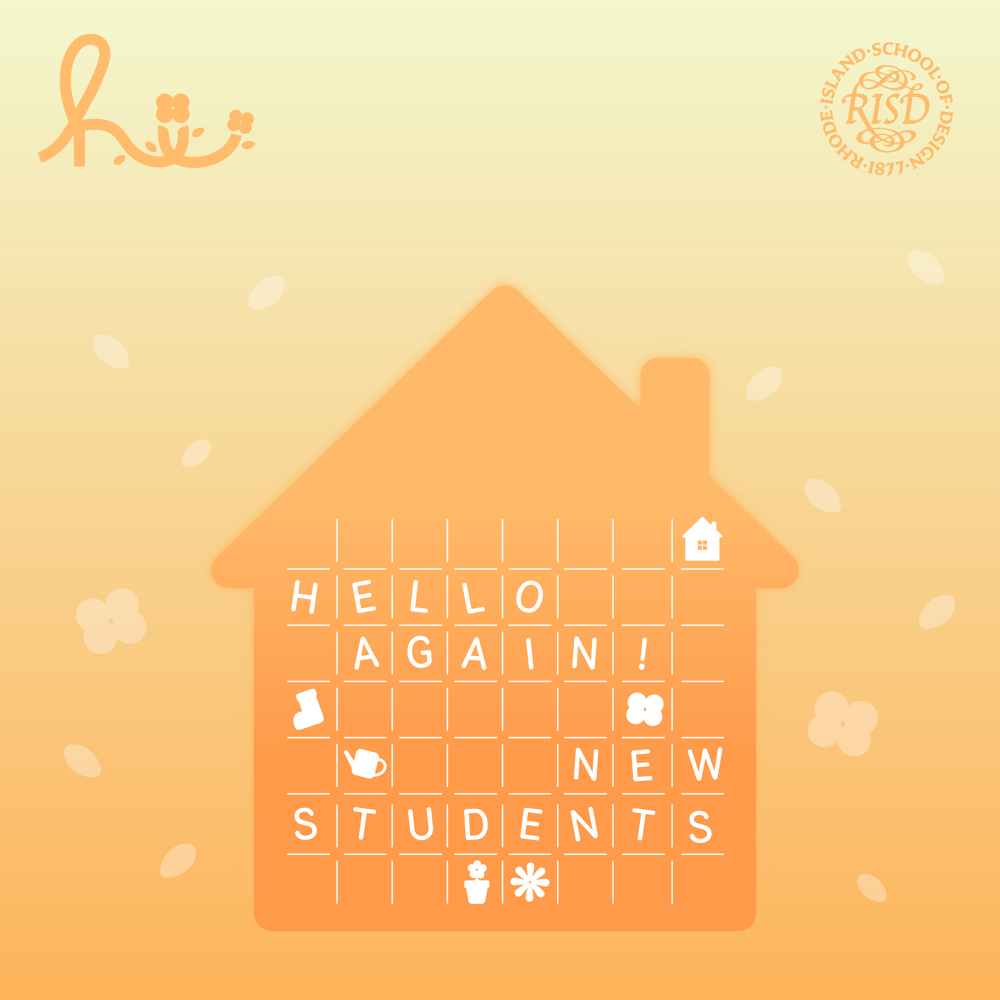
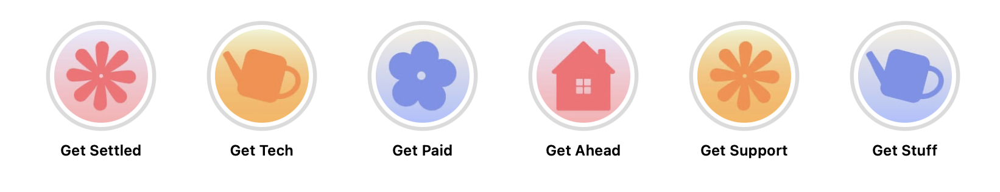
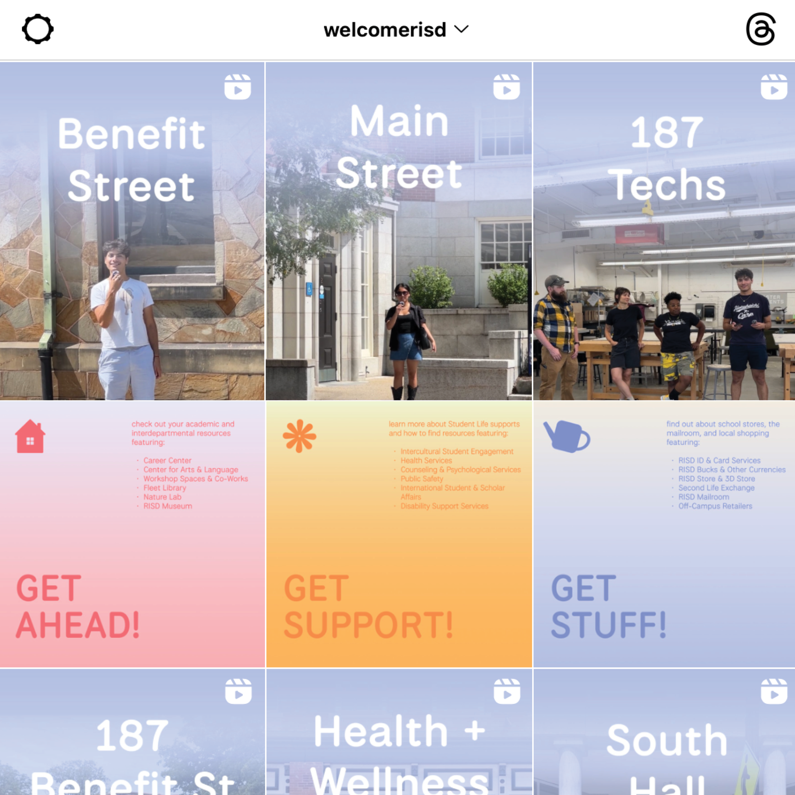
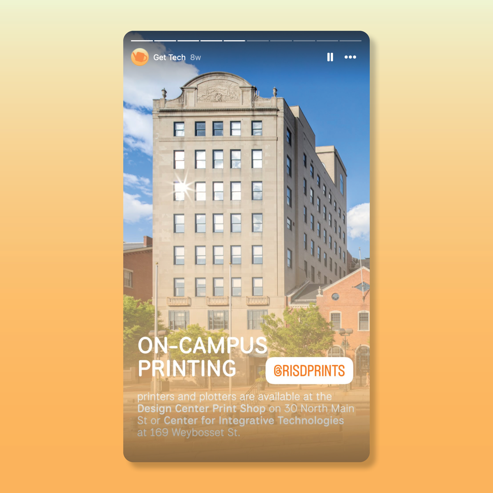

RISD ORIENTATION 2025
a welcoming look for new student orientation
identity design | art direction
client RISD Center for Student Involvement
collaborators Gonzalo Alvarez Garcia, Hyunmin Kim, Kay Kim, Punch Kulphisanrat
The Rhode Island School of Design (RISD) hosts a two week long orientation program to welcome incoming new students before the start of every fall semester. As an annual RISD tradition, the Design Guild works with the Center for Student Involvement (CSI) to create a unique brand identity for orientation, always centered around a theme and the word “hi”. For 2025, the theme chosen for orientation was “gardens and home”, where RISD would be a new home for incoming students to flourish and grow, like flowers in a garden.




As one of the two student co-directors working with CSI to organize and facilitate new student orientation over the summer, my role involved applying the design identity to various social media and digital applications. This included scripting and filming a series of educational tour videos around campus and preparing pre-arrival materials for the new students.




Special thanks to Chelsea Davignon, Veronica Dupuis, and Sarah Knarr from RISD Student Life for their guidance and support throughout this project.